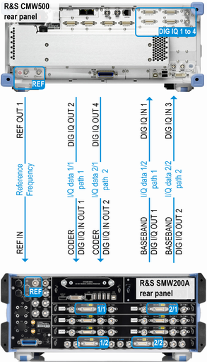

Test Setup for External Fading Scenarios
To superimpose fading on the baseband signal, you can integrate an external fader (e.g. R&S SMW200A) into a test setup. The external fader must be connected to the digital I/Q interface of the R&S CMW. At least one I/Q board must be installed at the R&S CMW for that purpose (option R&S CMW-B510x/-B520x).
All connections between R&S CMW and R&S SMW200A are established via the rear panels of the instruments.
The following figure shows a setup with two downlink paths using the first I/Q board (DIG IQ 1 to 4).

For a setup with only one downlink path, you need only two of the four I/Q data connections.
The RF connections between R&S CMW and DUT must be established in the same way as without external fading.